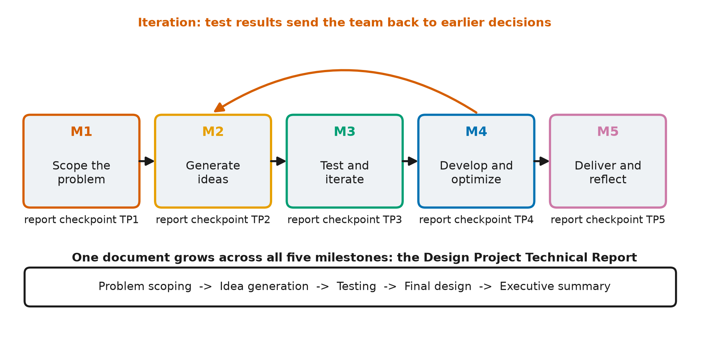

Oct 08, 2026 | 1432 words | 14 min read
15. The Engineering Design Process#
At a Glance
What you will do: Read how the engineering design process maps onto the five milestones, and which sections of your Design Project Technical Report you build at each one.
What you will submit: Nothing. Return to this page at each milestone.
In engineering, a project starts by defining the problem. Before designing anything, engineers confirm who the solution is for and agree on the criteria it must meet. The engineering design process (EDP) is the sequence of stages that takes a general request, such as “keep our plants alive,” to a tested solution. This project follows the EDP one stage at a time across five milestones.

Fig. 15.1 The five milestones as design stages, each with its report checkpoint: M1 scope the problem (TP1), M2 generate ideas (TP2), M3 test and iterate (TP3), M4 develop and optimize (TP4), and M5 deliver and reflect (TP5). The forward arrows show the order of the milestones. The backward arrow shows iteration: results at a later stage send the team back to an earlier decision. The band underneath shows the report growing section by section, from problem scoping to the executive summary.#
15.1. The Technical Report#
Your main deliverable is the Design Project Technical Report. Your team builds it over the whole project. At each milestone you draft new sections and revise earlier ones. By Milestone 5 the report covers the problem, the evidence, the ideas you considered, the design you chose, the data that shows it works, and what your team would do differently.
Each milestone has a report checkpoint, labeled TP1 to TP5. A checkpoint is a
graded submission of your report in its current state, together with the other
deliverables for that milestone. Examples of those deliverables are your client needs
analysis, a regression plot, a flowchart, and the performance plots for your
controller. Each checkpoint is graded on the sections that milestone requires.
Download the report template and start filling it in
at M1.
15.2. The Stages, the Milestones, and Your Report#
Milestone |
Design stage (what you do) |
Report sections you draft |
Sections you revise |
|---|---|---|---|
M1: Problem Scoping |
Analyze the client’s brief, scope the problem, set measurable criteria, research the background, organize the team |
II. Team Roles; III. Problem Scoping (problem statement, criteria and constraints, users and stakeholders, problem finding, background, assumptions) |
- |
M2: Idea Generation and Rapid Prototyping |
Learn what the system senses and controls, generate candidate ideas, model the insulation trade-off, evaluate ideas |
IV. Idea Generation (functional decomposition, prior art, sketches, AI); V. Thought Experiments |
III. Problem Scoping (update with simulation evidence) |
M3: Testing and Iteration |
Choose a hardware selection and control strategy with a weighted decision matrix, flowchart it, write a first draft, run it, and iterate until the crop survives |
VI. Iteration #1; VII. Testing Protocol, Prototypes, and Weighted Decision Matrix (predicted scores) |
III. Criteria; IV. Idea Generation (narrow to finalists) |
M4: Solution Development |
Finish, tune, and optimize the controller; test it against your criteria; exchange peer review |
VII. Test Results; VIII. Iteration #2; IX. Final Design (detailed design and data) |
VII. Weighted Decision Matrix (add measured results); VI. Iteration #1 |
M5: Communication and Refinement |
Deliver a client-ready report, present your work, reflect |
I. Executive Summary; IX. Final Design (novel aspects, trade-offs, lessons learned); X. References |
All sections (final revision for a reader who was not part of the project) |
Later milestones add new sections and also send the team back to earlier ones to review and improve them. This return to earlier work is called iteration.
15.3. Iteration#
Engineering projects do not move strictly from one stage to the next. Test results in M3 and M4 will send you back to earlier design decisions. Simulation evidence from M2 may show that a requirement you wrote in M1 cannot be met as written. When that happens, revise the requirement and record the evidence for the change. Revising a problem statement when new evidence arrives is one of the learning objectives of this course.
- PS05:
Problem Revision - Revise the problem statement based on new evidence or insights.
15.4. What Design Means in This Project#
Your team designs three parts of the greenhouse system: the hardware selection (glazing, heater, and battery), the sensor strategy, and the control software. You compare design choices in your report and build the controller in code.
In your report: You generate and compare design choices using sketches, a trade-off model, and a weighted decision matrix. The “generate ideas,” “prototype,” and “choose” stages of the EDP happen here.
In code: You write the controller and test it in a physics-based simulation of GHU-2, running on the hardware your team selected. For a given seed, the simulation produces the same result on every run, so your results are repeatable.
In the report template, a prototype is a candidate design: a hardware selection paired with a control strategy. To test a prototype, you run it in the simulation.
15.5. The Ideation Toolkit#
In Milestone 2 your team generates a wide range of candidate ideas before choosing any of them. Engineers use several named strategies to generate ideas. The Idea Generation section of your report requires at least four of the six strategies in the table below.
Strategy |
What you do |
Example |
|---|---|---|
Functional decomposition |
Break the job of the system into sub-functions and generate ideas for each one separately. |
“Keep the crop alive” splits into sense temperature, add heat, add CO2, water the roots, detect a faulty sensor, and survive a storm. “Detect a faulty sensor” alone suggests three ideas: trust the backup, average the two readings, or switch sensors when they disagree. |
Prior art |
Find how existing systems perform the same function and adapt the best parts. |
Commercial greenhouses remove excess heat by venting. GHU-2 cannot vent, so look at how other sealed systems, such as submarines and spacecraft, remove heat. |
Sketching |
Draw the system: where the sensors sit, what each actuator affects, and how the control loop connects them. |
A sketch shows interactions that are easy to miss in a list, such as the LEDs also adding heat and the pump also raising humidity. |
Rapid prototyping |
Make the simplest version that can be evaluated, such as a rule table or a few lines of pseudocode. |
“IF night AND temp below 17: heater 80%” is a complete rule the team can check against the brief before anyone writes code. |
Biomimicry |
Look at how living things solve the same problem. |
The human body holds 37 C by sweating or shivering slightly as soon as its temperature starts to drift. |
AI-assisted ideation |
Ask an AI tool for candidate approaches you have not considered. Check every suggestion against the brief and the physics, and log each use in your AI Use Log. |
Ask how controlled-environment farms keep a crop alive through a power shortage, then check each answer against the hardware in the annex. |
Work in two phases. First, generate ideas with these strategies without judging them. Then narrow the list. Your Thought Experiments table (report section V) evaluates about six of the strongest ideas against your criteria, and the weighted decision matrix in Milestone 3 selects one design from the finalists.
15.6. The Learning Objectives This Project Assesses#
This project develops and assesses the course outcomes below. Most of them also appear in earlier parts of the course.
- PS:
Problem Scoping - Develop and refine a problem statement based on stakeholder needs and evolving evidence.
- IF:
Information Fluency - Generate ideas fluently and explore multiple potential solutions.
- EB:
Evidence-Based Decision Making - Use evidence to compare, evaluate, and improve potential solutions.
- SQ:
Solution Quality - Design solutions that meet technical requirements and stakeholder needs.
- UC:
Universal Concepts - Demonstrate an understanding of foundational engineering concepts, including conservation principles and system modeling, that apply across engineering disciplines.
- DV:
Data Visualization - Visually represent data and derive meaningful information from data. Demonstrate ability to accurately describe data sets through foundational descriptive statistics and then perform simple inferential statistics through understanding probability concepts and linear regression.
- PR:
Programming - Write professional, well-organized, and error-free code. Store and access data appropriately; perform calculations using built-in functions and operators; and apply selection, repetition, and user-defined functions to solve problems. Translate written descriptions or flowcharts into working code. Students will demonstrate programming objectives using any appropriate programming or computational environment unless otherwise specified. For these objectives, “code” may include scripts, functions, formulas, or structured spreadsheet logic, depending on the tool used.
- AI:
Artificial Intelligence
- IL:
Information Literacy - Locate, evaluate, and use information appropriately to support engineering problem solving, modeling, and decision-making.
- TM:
Teaming - Contribute meaningfully to team projects and discussions. Demonstrate responsibility, collaboration, and mutual learning in group work.
- PC:
Professional Communication - Communicate engineering concepts, ideas, and decisions effectively and professionally through written, visual, and oral formats.
- EC:
Ethical and Contextual Reasoning - Understand and explain the broader impacts of engineering decisions or recommendations, considering ethics, uncertainty, risk, and stakeholder responsibility.
- PA:
Process Awareness - Reflect on individual and team problem-solving or design processes to support continuous improvement.